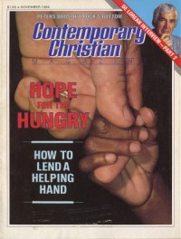

CMnexus
:
Contemporary Christian culture, music, and media.
Magazines
Profiles
Dove Awards
cmnexus.org
CM
nexus
→
Magazine list
→
CCM
→
Issues
Contemporary Christian Magazine
Nov 1984, vol. 7, iss. 5
< -- Prev
Issue list
Next -- >
Cover

Writers in this Issue
Bruce A. Brown
Robert G. Clouse
Karen Cushing
John Fischer
Dr. Lewis Foster
Steve Ledesma
Cher Merrill
Gary North
Joe Paskewich
Dan Peters
Steve Peters
Scott Pinzon
Tim A. Smith
Ronald J. Snider
John W. Styll
John Michael Talbot
Paul Thorson
Chris Willman
World Hunger
Remember The Poor:
Article:
"Book of Days" by John Michael Talbot
John Michael Talbot
"His Fall, His Faith, His Fight, part 2" by John W. Styll
John DeLorean
"Hey, Wait A Minute! Which Bible Should I Read?" by Dr. Lewis Foster
"Burning Rock's Bottom" by Dan Peters, Steve Peters, Cher Merrill
rock music; lyrics, lifestyle, goals, graphics
Records:
Philip Bailey
-
The Wonders of His Love
by Scott Pinzon
Candy Hemphill
-
Heart of Fire
by Karen Cushing
David and the Giants
-
Inhabitants of the Rock
by Steve Ledesma
The Gaither Vocal Band
-
A New Point of View
by Paul Thorson
Edwin Hawkins
-
Angels Will Be Singing
by Tim A. Smith
Chris Christian
-
Let the Music Start
by Steve Ledesma
Larry Norman
-
Quiet Night
by Chris Willman
Cindy Richardson
-
Crusader
by Bruce A. Brown
Robin Lane and the Chartbusters
-
Heart Connection
by Joe Paskewich
Karen Voegtlin
-
He's My Leader
by Karen Cushing
Sound Advice:
"On A Dead Run" by John Fischer
Relevant Links
Official web site of CCM
You may be able to find
CCM
in a library near you:
check
Worldcat
< -- Prev
Issue list
Next -- >
CMnexus
(noun)
The magazine index
of modern music
and Christianity
© 2011 CMnexus. Last updated August 2025.
Contact:
Rants and other correspondence to:
editor -AT- cmnexus
-DØT- org
About